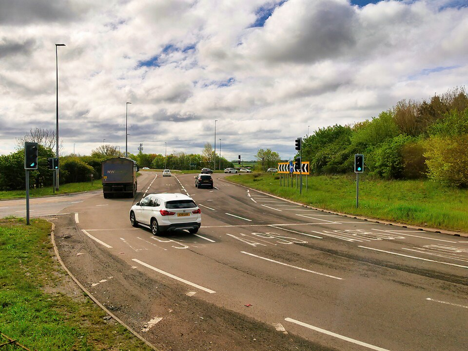
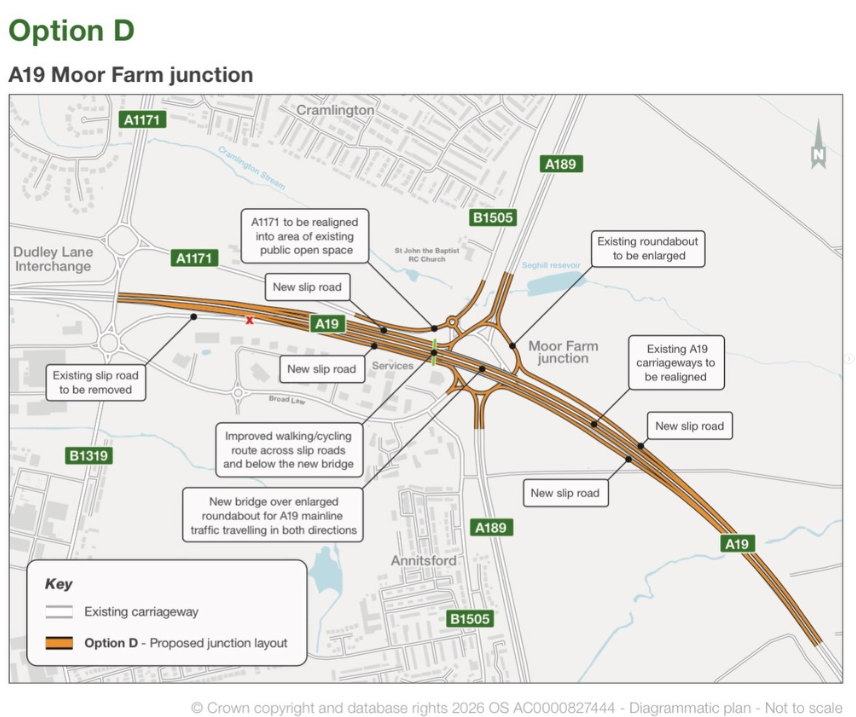
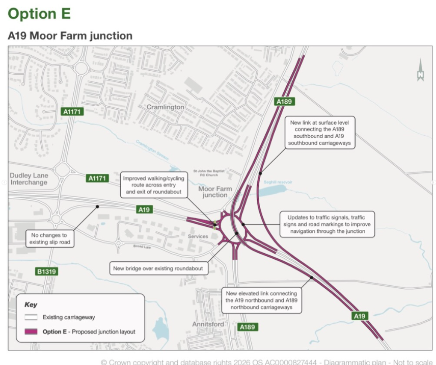

Plans revealed for Moor Farm roundabout upgrade as part of public consultation by National Highways
16TH JUN 2026
CramlingtonNews Editors

Plans for the Moor Farm Roundabout upgrades have now been revealed by National Highways.
National Highways has released a public consultation to improve the junction at the Moor Farm roundabout in south-east Cramlington in order to reduce congestion and improve journey times.
Residents are being consulted, starting today, at a drop-in exhibition at the Cramlington Community Hub - the period closes on 28th July 2026. National Highways has proposed two options for consideration in this consultation, options D and E (pictured at bottom of page).
Option D involves the creation of a new flyover bridge to allow the A19 to run uninterrupted over the Moor Farm roundabout, increasing the current speed limit on of 40mph in line with the National Speed Limit. Plans show the creation of 4 new slip roads off the A19 down to an enlarged roundabout with streamlined exits to improve traffic congestion.
Option E retains the existing roundabout but improves traffic signals and creates a new slip road from the A189 Spine Road to the A19, along with new slip roads adjoining adjacent roads. However, this plan still requires cars continuing on the A19 to pass through the Moor Farm roundabout itself. This plan is deemed 'slightly better value for money' by National Highways, but the congestion relief may not be as significant as option D.
If a suitable option is chosen, it is expected for construction work to begin in around 2031 as a Road Investment Strategy 3 (RIS3) pipeline project. Work to construct would take around 3 years with temporary routes made.
For more in-depth information, visit the National Highways consultation page.
Plans (click to view in fullscreen)

